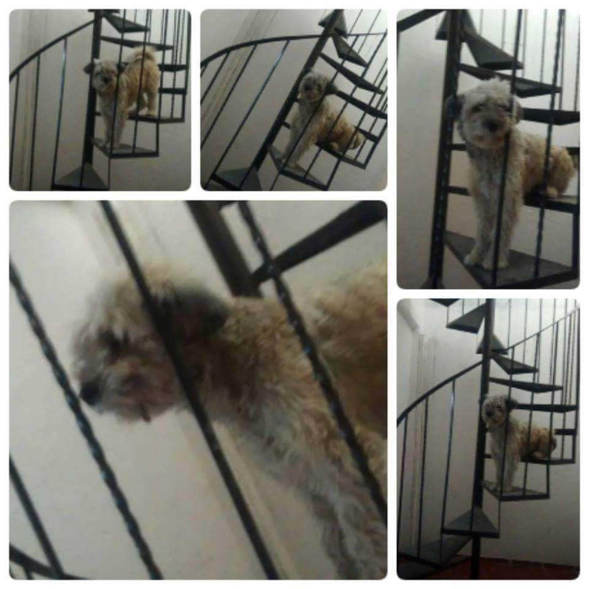
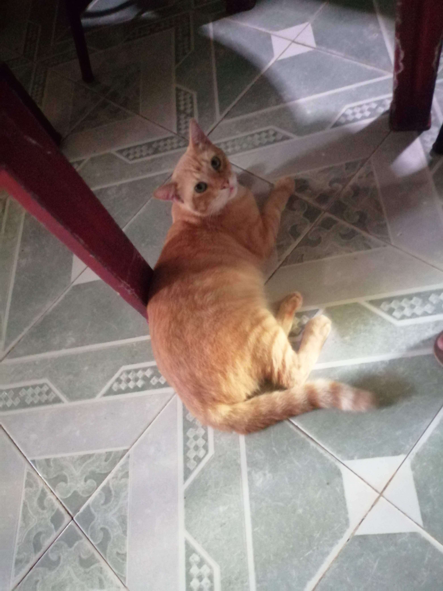

Mascotas
 
Tengo 2 perros son hembras, una se llama Nube, y otra se llama Frida, ellas no pueden estar juntas porque se pelean, por eso mismo están separadas y cada quien tiene su propio espacio.
Me gustan mucho los animales domésticos, perros, gatos, víboras, en toda mi vida he tenido 8 perros aproximadamente, sus nombres eran Lukas, Deisy, Negra, Mona, Centella, Frida, Axel, Nube, Killer alias Pichi.
Negra fue mi primera perrita era cruza de Dóberman y callejero, era super amigable y le encantaba la calle solo abrías la puerta y salía corriendo, ella murió de viejita. Cuando estaba la Negra también estaba Deisy y Lukas, el recuerdo más bonito que se me viene a la mente es el día que me puse a lavar mis trastes de juguete y por un instante me metí para cambiarme de ropa y entre Deisy, Negra y Lukas se pusieron a lavar los trastes conmigo jajaj pues con su lengua estaban lambiendo todos mis trastes.
Me hicieron dar en adopción a esos perritos porque nos íbamos a mudar de casa y en la casa que nos íbamos a ir no había suficiente espacio para mis perros, al menos se los di a una familia que los cuido mucho.
Cuando murió Negra me puse super triste pues sabia que ya no tenía con quien jugar, entonces fuimos de vacaciones a Acapulco y nos dieron la noticia de que una perrita había dado a luz y estaban regalando los cachorritos, fuimos a ver y me encontré con Centella una pitbull de color café claro y ojos color miel, era hermosa me encariñe rápido de ella, nos la trajimos para Morelos y en ese momento me regalaron también a Frida una cruza de collie barbudo y pastor inglés. Desde que vi a Frida me encariñe con ella.
Centella se embarazó y tuvo a más cachorritos y de esa camada me quede con Nube, Axel y Pichi. En total en mi casa eran 5 perros al mismo tiempo, mis papás pues no querían muchos perros entonces uno de mis tíos se llevó a Pichi.
Centella murió de viejita y al final me quede con Nube Axel y Frida.
Actualmente, solo tengo a Nube y a Frida pues Axel se enfermó y desgraciadamente falleció. Me encantan los perros por eso mismo sufro cuando ellos están enfermos o les pasa algo.